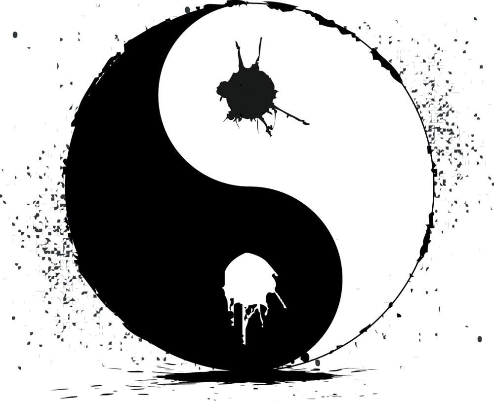

Сказание о странствующем мастере ки → Мастерство ДзенАвтор: Голая пионерка Дата: 25.08.2019 |
Мастерство Дзен
Основы конденсации ки
Пройдя через долгие и упорные духовные тренировки, человек способен открыть для себя ещё один источник энергии, текущей во всём сущем. Душа природы, пронизывающая каждый камень, каждую каплю росы, каждое живое существо была названа «ки».
Умение концентрировать и направлять ки даёт использующему её сверхчеловеческие возможности. За счёт этой энергии воин может укрепить тело, усилить навыки и использовать в бою духов, которых первые мастера Дзен одарили именами – символами ки.
Так кто же такие мастера Дзен? Это люди, отрёкшиеся от своей животной сущности и ставшие единым с природой. Для познания мастерства Дзен мало владеть ки, нужно понимать и осознавать её устройство.
Одним из величайших мастеров Дзен считается Император Змей, чьё единение с природой было настолько велико, что смогло расколоть континент и уничтожить тёмную Орду, угрожавшую всему миру, но и среди его последователей многие отлично использовали эту силу во благо великих Кланов.
Мастера Дзен от мудреца, использующего обычную ки, отличает знание о её крайностях. Подобно магии, состоящей из четырёх фундаментальных стихий: огня, воды, ветра и земли, ки также имеет противоборствующие стороны, описываемые чаще всего как частицы Инь и Ян.
Инь – частица мрачной души природы, порождающая смерть, боль и скверну, полная ненависти и отчаяния. Она генерируется из страданий и служит неисчерпаемым источником энергии, на ней основаны техники разрушения и испепеления.
Ян – частица светлой стороны, являющаяся основой благодействия, роста, процветания и исцеления. Её генерация происходит в моменты подавления зла и скверны, уничтожения тёмных сил, а применяется эта энергия исключительно в целях защиты, созидания и восстановления.
Мастера Дзен способны конденсировать Инь и Ян в частицы, которые используют для своих техник, однако использовать обе энергии невозможно в виду их взаимной несовместимости. Зачастую тип частицы определяется душевным настроем и внутренним миром мастера.
Свет и тьма являются не только противниками, но и братьями – без одного другое существовать не способно, поэтому конденсация частиц происходит при их взаимном уничтожении. Эта вечная битва и есть путь Дзен – дорога жизни и познания истинности бытия. Пока будет существовать баланс между Инь и Ян, великие мастера Дзен смогут сражаться ради права вновь и вновь продлевать существование мира.
Способы использования
Мастера Дзен придумали несколько способов использования души природы. Первый и самый простой – техники, основанные на прямом взаимодействии. Для их использования мудрецы призывают духов ки (происходит это путём создания их имён при помощи заряженного песка или словесно, причём заряженный песок даёт многократный прирост в силе, но требует намного больше времени). Таким образом мастера Дзен могут реализовать конденсированную энергию. К примеру, техника укрепления тела и всевидящего ока основаны соответственно на словесном и графическом начертании имени духа.
Второй способ реализации ки – создание печатей. Его преимущество заключается в том, что для использования печати в последствии не требуется затрачивать энергию, однако на их создание уходит время и дорогостоящие материалы. Также печати можно усиливать в момент использования вливанием дополнительной ки. Их обычно применяют подготовленные мудрецы, точно знающие свои потребности, или воины, запечатывающие в них боевые техники.
Третий способ, доступный только для мастеров Дзен, основан на использовании Инь или Ян. Он представляет собой целое искусство, внешне похожее на первый способ, но открывает невиданные пути для реализации энергетического потенциала. Именно при помощи огромного количества частиц Ян некогда Император Змей расколол континент, а Клан Лотоса благодаря элементам Инь способен управлять погодой и даже воскрешать мёртвых.
В древних сказаниях упоминается также и четвёртый способ использования ки – через живого духа. Живые духи представляют из себя реальное существо, способное общаться с нематериальными силами. Таких духов известно четыре, и от них на заре времён пошли названия великих Кланов.
Дух Волка – следопыт и мастер выживания, которому не страшны голод и боль. Волк преследует добычу до самого конца. Он не жесток, но хладнокровен, и делает всё ради того, чтобы увидеть рассвет следующего дня.
Дух Лотоса – великий цветок, дарующий долголетие и даже вечную жизнь. Лотос растёт в болотах у корней древа Дзен в самом сердце мира. Его вечные спутники – три сильных нематериальных духа: дух листа, дух ствола и дух корня (дух ствола также известен как дух посоха, а дух корня – как дух клинка). Обращение к Лотосу требует большого количества жизненной энергии.
Дух Змея – неугомонный и жадный зверь, пожирающий врагов и отравляющий сердца друзей. Он постоянно искушает своих жертв силой Инь и предпочитает питаться только тёмными частицами. Для совладания с ним требуется большое количество силы воли и твёрдость характера. Покровитель воровства и интриг.
Дух Дракона – непокорное гордое существо, обитающее высоко в горах, которое никогда не видел ни один из смертных. По свиткам, оставшихся от основателей Клана Дракона, их дух оберегает яйцо и ждёт часа, когда из него появится преемник. Интересным является тот факт, что дух Змея в древних легендах пытается заполучить некое яйцо…
Вместе с предрасположенностью к определённым частицам: Змей и Лотос – Инь, Дракон и Волк – Ян, духи наделяют своих почитателей силой в обращении с одним из магических элементов. Слуги Змея прекрасно обращаются с огнём, Дракона – с ветром, Лотоса – с водой, а Волка – с землёй. Расход магической энергии для клановых техник сильно уменьшается.
Имена духов ки
«Мэй» – жизнь. Определяющий дух всего сущего, способный наполнить дыханием любой объект и исцелить раненного.

«Мизу» – вода. Элементальный дух, покровитель рек и морей, дождя и тумана.

«Мако» – всевидящее око. Безглазый орёл, подаривший своё чудесное зрение мастерам Дзен.

«Секи» – камень. Элементальный дух, покровитель большинства земляных техник и главный защитник всего живого.
«Моку» – дерево. Символ роста и жизненной энергии, преобразования смерти в новое начало.
«Хэби» – змея. Одно из имён великого Змея, на которое он никогда не откликается, а вместо этого посылает своих слуг. Используется чаще всего для призыва.
«Ни» – неизученный символ.
«Хото» – один из основополагающих символов учения клинка, обозначающий принадлежность к роду мечников и благословляющий фамильный меч. Им в совершенстве овладел брат Литий, один из трёх братьев-духов, защищающих Клан Лотоса.
«Конпон» – основание. Фрагмент многих боевых техник.